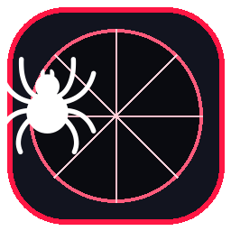
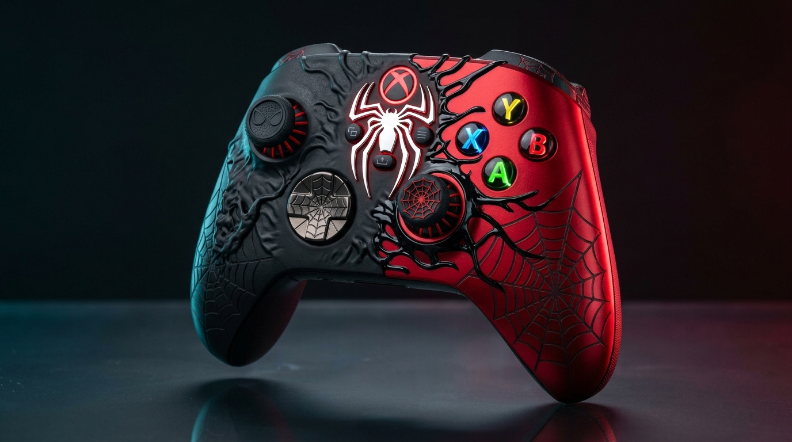
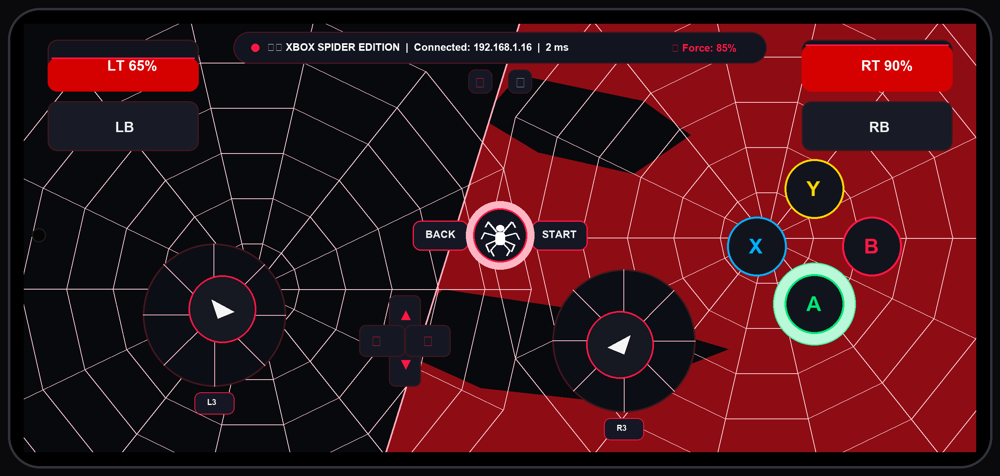

Crimson Arachnid Edition | Ultra-low latency Android Wi-Fi game controller with genuine ViGEmBus Xbox 360 emulation, Force Feedback Rumble, Gyro Motion & 4-Player Local Co-Op.
Custom Xbox Crimson Arachnid Edition controller design.

Sub-2ms responsiveness with dual sticks, triggers, haptics & quick toggles.

Uses the official ViGEmBus driver so Windows and games detect a genuine Microsoft Xbox 360 gamepad out of the box with Steam, Game Pass, and Epic Games.
PC game vibration signals are streamed in real time to your phone's vibration motors. Feel every collision, weapon discharge, and curb strike.
Tilt your smartphone like a steering wheel in racing games, or tilt for sub-millimeter precision crosshair aiming in first-person shooters.
Hardware-timed rapid fire allows continuous automatic firing on action buttons and triggers by holding them down.
Turn your phone into a PC trackpad. Glide to steer the cursor and tap to click for easy navigation of game launchers and desktop windows.
Native CoreGraphics event simulation for macOS (Apple Silicon & Intel). Enjoy wireless gaming in Apple Arcade, native Mac games, and emulators (OpenEmu, Dolphin, RPCS3).
Connect up to 4 phones simultaneously on the same Wi-Fi network. The PC server automatically assigns Player 1 through Player 4 virtual slots.
ArachnidPad-PC-Server.zip and run start_server.bat.ArachnidPad-Mac-Server.zip and double-click start_server.command.
WiFiGamepad.apk on any Android 8.0+ smartphone.